How to plan, design, build, edit and prove a professional website: calm editorial clarity, purposeful spatial motion and an editor anyone can use. For any designer, developer or AI.
Order of authority. (1) The client's words in the current request. (2) The client's brand system and approved facts. (3) This brief. (4) The builder's own taste. When two instructions conflict, name the conflict and ask which wins. Never pick one silently.
Fits: any site that has to explain something real (an organisation, a product range, a service, a school, a studio) and still feel memorable. Does not fit: pure web apps, dashboards or long documentation, which need utility over atmosphere.
Deliver with every build: a responsive implementation; design tokens in one file; a component map; a motion trigger table (effect, trigger, values, fallback); a content editor with drafts, preview, roles and versions; database migrations; an editor guide; a sources register for facts and images; disclosure of anything unfinished, placeholder or unverified; and evidence for every item in chapter 16.
Each rule carries a status. Rule means it must be followed, Default means start here and change it with a reason, Avoid means it was tried and rejected, and Check means verify it before launch. In chapter 02, Keep, Changed, Dropped and New mark what happened to each research idea once it was built.
The research recommended a combination: Floema's clarity, Inertia's interaction language and selected signature effects. Each idea was then built, shown to the site owner and kept, changed or dropped.
| Reference idea | Research proposal | Verdict | What to do now |
|---|---|---|---|
| Spatial explorer (spiral of images) | 6–10 images on a shallow helix; wheel and drag; prev/next and a list mode. | Changed | Keep the helix. Drive it by reading page scroll plus drag and arrow keys; no visible prev/next or list buttons (owner: "just make the picture interactive"). Caption in a fixed two-line slot. |
| Same, for text items | None. | New | A "term spiral" turns cards of icon + term + one-line tagline as the section pins. Useful for values, principles and features. |
| Titles stack, separate, exit sideways | Stack → spread → side exit → settle over 1.5–2 viewports. | Dropped | Built and rejected as too fast and busy. Replace with a lit statement: the section holds still while each word brightens in turn with an underline. |
| Down → across → down chapter | Native scroll pin; x = −D·p; skip link; stack on mobile. | Keep | Keep the model. Measure D against the content box, align to the content edge, pin only when D > 0, and use a native snap-scrolling row (not a stack) when not pinned. |
| Shared small responses | One text roll, one arrow swap, one image emphasis, one headline reveal. | Keep | As proposed. Headline reveal is a soft word fade, once. Nothing re-animates on every scroll. |
| Moving text band | Slow loop with pause. | Keep | Only for decorative repetition, never essential information; pause control; static with reduced motion. |
| Masked / clip reveals | Clip-path reveals for media. | Dropped | A full clip hid images so lazy loading never fired (blank spaces in Safari). Use opacity and scale reveals. |
| Purpose-led storytelling | Outcome → object in environment → name and benefit → route → detail → evidence. | Keep | The backbone of every page (chapter 07). |
| Warm off-white palette, one acid accent | Ink, cream canvas, one light accent. | Changed | Palette comes from the client's brand file, by role (chapter 06). Cream is not a default. |
| Generous spacing (to 144px) | 8px base up to 144. | Changed | The owner found it too empty. Section spacing 48–104px. |
| Ambient atmosphere | Not specified. | New | When the owner wants the site to "feel alive", add background motion: faint oversized labels drifting slowly, gentle photo parallax, sticky asides. Do not move the text being read. |
| Long text | Not specified. | New | "Read more" with a round down arrow for long passages; a scroll-cue arrow under the hero. |
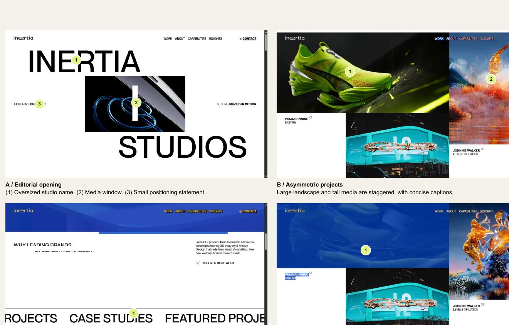
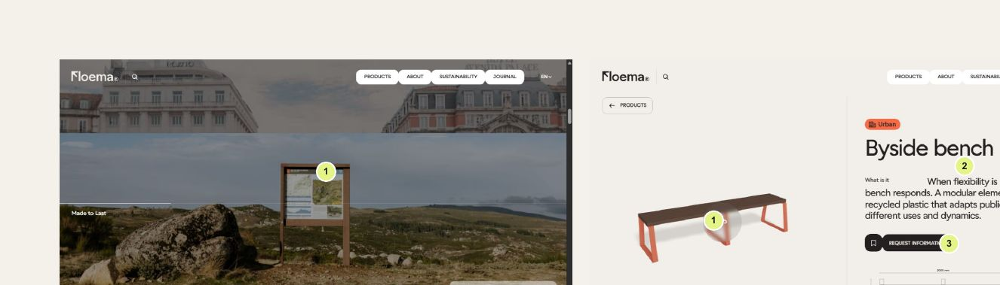
Each row is feedback a site owner gave while reviewing a live build, why it happened, and the rule that now applies to every project.
| Owner said | Why it happened | Rule from now on |
|---|---|---|
| "Why are there arrows and an All photos button? Just make the picture interactive." | Visible controls made the signature feel like a widget. | Rule Spatial galleries are driven by scroll and drag, with keyboard arrows when focused. Show a one-line hint, not buttons. |
| "The description goes to two lines and shifts the whole page." | Variable-length text inside an animated component. | Rule Captions and counters sit in fixed-height slots (line clamp) on fixed grid rows. Test by cycling every state. |
| "Use the spiral, less text and icons for each." | Lists were read as paragraphs, not scanned. | Rule Values, features and principles: icon + term + one line. Full descriptions stay in the editor for a grid view. |
| "Make part of the page scroll right instead of down." | Wants a directional change. | Default One sideways chapter per page, for 3–6 comparable items. |
| "The left part is cut off and isn't a real way to scroll." | Overflow was measured against the padded box; on wide screens the row neither pinned nor scrolled. | Rule Measure against the content box, align to the content edge, pin only if it overflows, otherwise a native snap row. |
| "Add more animations, make the page feel alive." | Static pages felt flat. | Add ambient and reveal motion in the background (chapter 08), never by moving the text being read. |
| "Too much animation; headings move randomly to the side." | Scroll-linked sideways headings strain the eyes. | Avoid Moving headings with scroll. Rule Headings fade up once; ambient motion goes to faint background labels. |
| "The word animation isn't good and plays too fast." | Stack, spread and exit choreography was busy and short. | Rule Lit statements: words brighten in turn over about 1.6 extra viewport heights; nothing slides. |
| "There's a lot of empty space." / "Some images don't load." | A clip-path curtain kept lazy images unloaded in Safari; the spacing scale was too generous. | Avoid Fully clipping or hiding images. Rule Eager-load images inside moving scenes; section spacing 48–104px. |
| "I'm stuck on a full white page." | Page transitions and page-enter animations stall in embedded viewers. | Avoid View transitions and whole-page enter animations unless tested in every container the client uses. |
| "Many buttons just say no page exists." | Links drawn by script pointed to server routes the preview lacked. | Rule Crawl every link, including script-opened menus and search results. Previews map routes; server-only features explain themselves. |
| "Some buttons don't work and it loads too slowly." | Script paths broke in the hosted copy; many parallel image requests. | Check Test the exact shared link, not just localhost. Retry dropped images; size images responsively. |
| "The top scroll indicator colour is ugly, muted and dark." | A multi-hue gradient turned muddy between hues. | Rule Indicators use one saturated brand colour, optionally with a soft glow. |
| "There's a collision" (lines across a button) | The focus ring of an invisible jump target was drawn. | Rule Programmatic jump and skip targets: zero height, outline: none. |
| "Clicking at the bottom should open the new page at the top." | Scroll position carried over between page loads. | Rule New pages open at the top unless the link names a section. |
| "Like how some people's heads move down" (a sticky portrait) | Sticky asides felt calm and alive, but only worked where the aside was shorter than the text. | Rule Sticky aside columns must be shorter than the text beside them: compact heading, longer text opening. |
| "Have down arrows when there's a lot of text." | Long passages needed a cue and a choice. | Rule "Read more" with a round down arrow over about 1,100 characters; a scroll cue under the hero. |
| "Give me the editor's version" / "Can't anyone just go to /admin?" | Owners need to see and trust the editor. | Rule Ship an editor tour of real screens, plus a plain explanation of sign-in, roles, lockout and how to restrict access. |
| "I want to actually see the site, not images." | Screenshots don't let people test anything. | Rule Always give a working, clickable preview (a hosted build or a verified static copy) as well as screenshots. |
| Brand | Official logo files (SVG), colour values, typefaces and licences, existing guidelines. |
| Facts | Every claim the site may make, with its source and owner: names, numbers, prices, dates, results, addresses, contacts. |
| Structure | Audiences and their top tasks; the information architecture (pages, parents, navigation labels); legacy URLs to redirect. |
| Media | Real photographs with release status and alt-text context; video if any; documents (PDFs). |
| Operations | Who edits what (roles); where forms should go (email, CRM webhook); analytics and consent requirements; hosting constraints. |
| Direction | Reference sites and what the client likes in each; any visual "don'ts"; the devices and viewers they will review on (for example an iPad inside an app). |
Rule Keep a sources document listing every fact, where it came from, its owner and its status (approved, awaiting confirmation). Content awaiting confirmation is visibly labelled on the page. Results and figures carry a year label.
Ask when the answer changes what gets built (a missing fact, a brand rule, a conflict between instructions). Don't ask for things with a sensible default; state the default and proceed. When the owner says "your call", choose, explain briefly and keep the choice reversible in the editor.
Define tokens once and derive everything from them. Colours are defined by role; the client's brand fills the roles. Take values from the official logo file, not from screenshots.
Rule Body text at least 4.5:1, large text at least 3:1, including text over photographs. Muted text on dark bands stays at least 4.5:1, so check it as you dim. Never convey meaning by colour alone. Light accents (yellow, lime) are for graphics or carry dark text.
| Token | Default | Notes |
|---|---|---|
| Typefaces | Brand display face (600–700) + neutral sans for body (400–600). | Self-host at build time; no runtime font requests; licensed or open fonts only. |
| Type scale | Display 40→104px · H1 36→72 · H2 30→56 · H3 20→28 · Lead 18→22 · Body 16→18 (line 1.6) · Meta at least 13. | Fluid clamp() from 320 to 1440px; headings use text-wrap: balance and a ch max width. |
| Container and gutters | Max 1440px; gutters clamp(20px, 4vw, 64px); gaps 16→24px. | 12 columns on desktop, 4 on mobile; split headers 7/5; asides 4/7. |
| Section spacing | 48→104px. | Alternate plain and tinted bands to separate chapters without extra space. |
| Spacing scale | 4px base: 4, 8, 12, 16, 24, 32, 48, 64, 96. | Use layout gap, not stacked margins. |
| Shape | Radius 8 small, 12 buttons and cards, 16–20 photographs; pills only for chips. | Shadows only on raised layers (menus, dialogs, banners). |
| Buttons | Primary (ink), secondary (outline), light (on dark); joined icon and label. | At least 44px tall; the label states the action. |
Use the client's own images, words and proportions. Extract relationships from references (stable labels against moving imagery, compressed text against open space, objects in their environment) rather than copying branded layouts, fonts or code.
Hero (page, compact or category variant) → introduction → two to five content sections from the block library → related links → one call-to-action band. Breadcrumbs below the top level. Each audience reaches its top task within one click of the home page.
| Openers | Hero (home with spatial gallery, page with photo, category with label and colour, compact); Fact strip; Notice. |
| Narrative | Text (aside, narrow or statement; becomes a sticky letter with a signature and portrait); Image and text; Feature mosaic; Lit statement; Word band. |
| Lists | Terms (grid with descriptions, or spiral of icon + term + tagline); Link cards (grid or sideways row); Numbered steps (list or sideways row); Grouped lists; Table. |
| Media and people | Gallery with accessible viewer; People; Documents and resources. |
| Dynamic | Latest stories; Upcoming events (auto-hide when past); FAQ list (deep links); Locations with consent-gated maps; Pricing or admissions information from one source. |
| Action | Enquiry form; Call-to-action band; Reusable section (edited once, placed many times). |
Sticky header with click-to-open menus, a mobile menu dialog and search; a footer with contacts and policies; a sticky mobile primary action; a cookie banner with Accept, Reject and Customise; a search results page that works without JavaScript; a helpful 404; a sitemap, robots file, metadata and structured data; redirects from legacy URLs.
Level 1 is feedback (150–300ms). Level 2 is reveals and ambient motion (450–900ms, or tied to scroll position). Level 3 is the signature scenes: at most one per page. One frame-throttled scroll listener owns every scroll-driven effect. Native scrolling only: no smooth-scroll libraries and no wheel capture.
| Effect | Trigger | Starting values (proven) | Fallback |
|---|---|---|---|
| Spatial gallery | Reads page scroll (1 item per ~160px while on screen); drag (8px threshold); arrow keys when focused. | 6–10 items on a helix: radius 50% of stage, ~36° apart, rise 3%; damping time constant ~90ms; cards 40% wide; depth dims and desaturates; tilt ≤2°. | Reduced motion: keys and drag, instant. A semantic list with alt text and a live caption. |
| Term spiral | Section pins; 0.5 viewport heights per card; counter, progress, Skip. | Radius 75% of stage, ~30° apart; damping ~110ms; cards with icon, number, term, tagline. | Below ~900×640 or reduced motion: keyboard-focusable snap row. |
| Sideways chapter | Outer height 100vh + D; x = −D·p. | Cards clamp(280px, 27vw, 400px) from the content edge; no easing on the track; progress line, Skip. | D ≤ 0, below 1024×640, or reduced motion: native snap row. |
| Lit statement | Section holds; words light between 10% and 80% of travel. | Total travel ~260vh; muted (still ≥4.5:1) → full colour; underline scaleX 0→1; one decorative shape turns ≤6°. | All lit, not pinned. |
| Heading reveal | Once, on entry. | Words fade and rise 0.25em, 900ms, 40ms stagger; the heading box never moves. | Static. |
| Media reveal | Once, on entry. | Opacity 0→1, scale 1.035→1, 560ms, 70ms stagger; images stay laid out and loaded. | Immediate. |
| Photo parallax | While on screen. | ±28–48px against scroll; image enlarged 12% so edges never show. | None. |
| Background label | While on screen. | Section label at 3.5–10rem, ~4.5% opacity, behind the heading, ±70px sideways; CSS-generated. | Hidden under 768px; static with reduced motion. |
| Sticky aside | Native sticky. | Top = header height + 24px; aside shorter than the text. | Stacked on mobile. |
| Read more / scroll cue | Text over ~1,100 characters; under the hero. | Opens at ~26rem with a fade mask; 44px round arrow nudges every ~2s; aria-expanded. | Without JavaScript: full text. |
| Progress line | Page scroll. | 4px, one saturated accent, soft glow. | Same. |
| Links, buttons, cards | Hover = focus. | Text roll and arrow swap 220–320ms cubic-bezier(.22,1,.36,1); icon nudge 3px; image ≤1.03. | Colour and underline. |
| Band | On screen; pause on hover, focus, button. | 20–35px/s; duplicate hidden from assistive technology. | One static line. |
| Overlays | Menu, search, settings, viewer. | Native modal dialog; 320ms fade and 12px rise; Escape closes; focus returns. | Instant. |
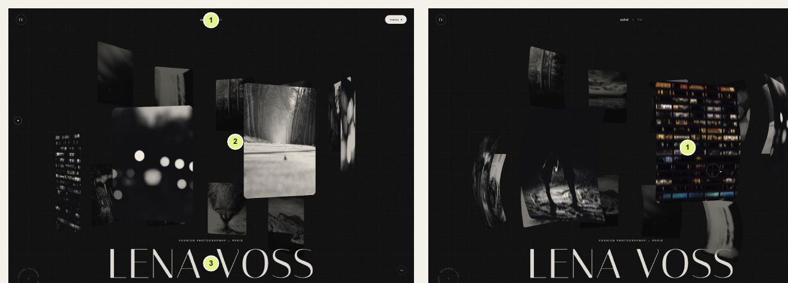
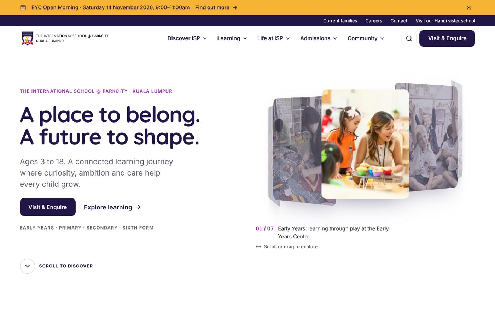
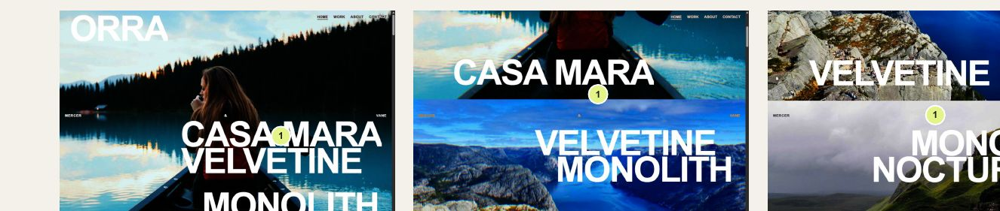
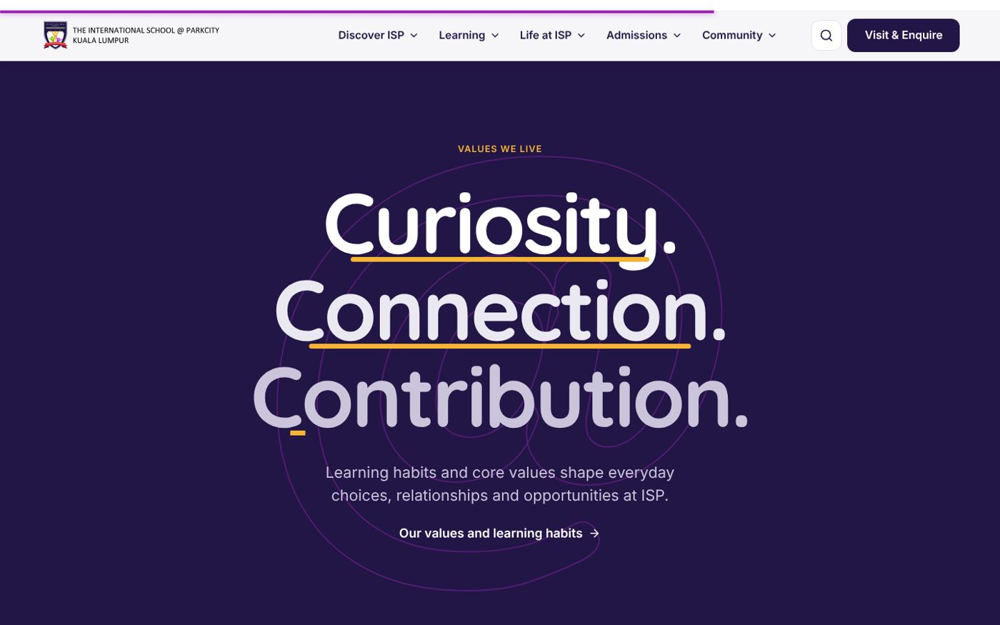
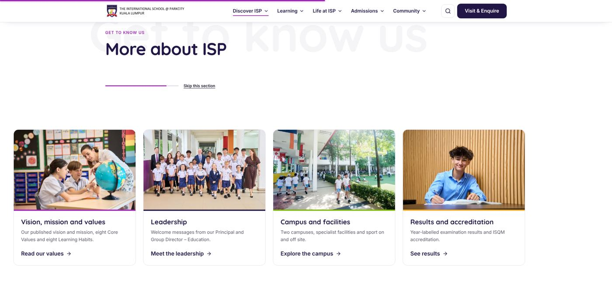
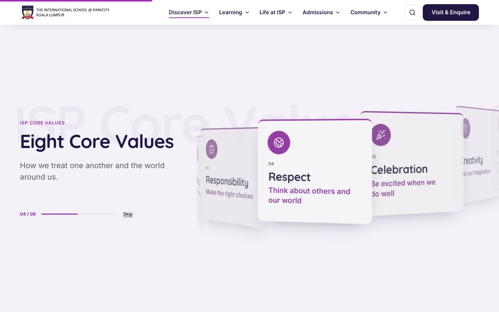
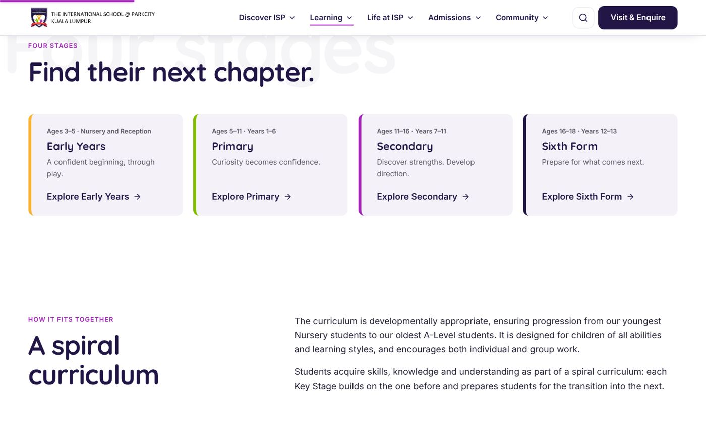
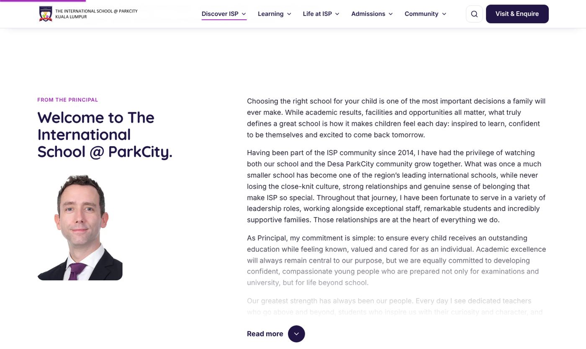
main; only tables and code scroll inside their own boxes./page.html)./admin.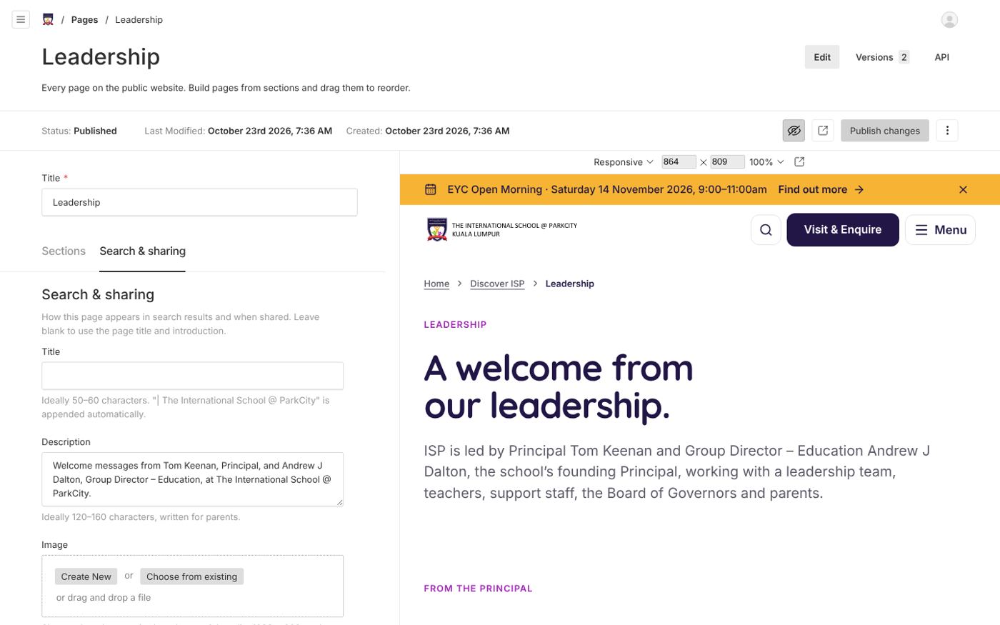
| Width | Behaviour (defaults) |
|---|---|
| ≥ ~1360px | Full navigation with click-to-open menus. Pinned scenes active when they overflow. |
| 1024–1359px | Menu button before any label wraps (find the exact breakpoint by testing the longest labels). Pinned scenes still active if the window is at least ~640px tall. |
| 768–1023px | Snap swipe rows instead of pins; two-column grids. |
| < 768px | Single column; sticky bottom primary action with space reserved; tighter spiral; no background labels; swipe rows from the content edge. |
Check 320, 390, 412, 768, 820, 1024, 1366, 1440 and 1920–2000px; portrait and landscape tablets; long titles; 200% zoom; the client's own device and viewer (for example an iPad inside a chat or email app).
12 / Accessibility and reduced motionprefers-reduced-motion in CSS and JavaScript, live: no pinning, parallax, spiral turning, drifting labels or bands. Everything stays in normal flow.sizes per component; preload only the first hero image.frame-ancestors 'self'; force https and HSTS only when served over https; remove framework banners; validate and rate-limit every form and API.A Node host, a PostgreSQL database, persistent or S3-type file storage, https, environment variables for secrets, a migration step on every deploy, backups, and staging before production. Document every setting in the README.
When a build is shared as plain files (review links, artifact viewers): map server routes to files; build search from an exported index; make server-only features explain themselves; open every page at the top; retry dropped images; keep structured data byte-identical to avoid hydration mismatches; then crawl every link and image in the copy before sharing it.
14 / Implementation contract// Sideways chapter inner = viewport.clientWidth - paddingLeft - paddingRight D = max(0, track.scrollWidth - inner) // re-measure on resize, fonts, images pinned = largeEnough && !reducedMotion && D > 0 outer.height = 100vh + D; p = clamp((scrollY - outerTop) / D, 0, 1); track.x = -D * p // Helix position for item i, continuous position pos d = shortestRingDistance(i, pos, count) // 0 = front x = sin(d*step)*R; z = (cos(d*step) - 1)*R; y = d*rise; rotateY = d*step current += (target - current) * (1 - exp(-dt / tau)) // tau 90-110ms; stop the loop when settled
| Phase | Output |
|---|---|
| 1. Analyse | Read every input; list facts, gaps and conflicts; ask only what changes the build. |
| 2. Architecture | Content model, block library, routes, roles and the motion trigger table, written down before building. |
| 3. System | Tokens, type, layout, primitives, interaction language. |
| 4. Build | Blocks, pages, signature scenes with fallbacks, forms, search, consent, SEO, 404. |
| 5. Content | Seed real content and images from sources; sources register; placeholders labelled. |
| 6. Prove | Run the full checklist (chapter 16) on a production build. |
| 7. Show | A clickable preview the owner can open on their own device, plus an editor tour. Report results honestly. |
| 8. Review rounds | Treat each round of owner feedback as rules: fix the cause rather than the symptom, re-run the checklist, re-publish to the same link, and summarise what changed and why. |
| 9. Launch | Hosting, domain, https, backups, redirects, analytics consent, approvals of facts and photos, staff accounts, and an editor training session. |
| Static analysis | Lint and type-check clean. |
| Unit tests | Validation, consent, rate limiting, search, slugs and redirects. |
| End-to-end | Navigation, menus, search, forms, consent, gallery keys, Read more, editor roles and preview, on desktop and mobile, against a production build. |
| Accessibility | Axe: zero serious or critical issues on representative pages. |
| Overflow and stability | No horizontal scroll at any listed width; cycling animated states moves nothing outside the component. |
| Link and image crawl | Every link (including script-opened menus) resolves; every image loads at desktop and phone widths, on the exact link being shared. |
| Hydration | No hydration warnings in production or previews. |
| Reduced motion | Every scene readable and usable. |
| Real devices | iOS Safari, Android Chrome, and the owner's viewer. |
| Editor | Draft, preview, publish, restore; each role can do exactly what it should. |
| Disclosure | Unfinished items, placeholders and unverified facts listed. |
Build a professional website and a block-based content editor for [CLIENT] using the attached facts, brand assets, information architecture and reference notes. Follow the attached Master Website Brief; my own words override it. Never invent facts: label anything unconfirmed and keep a sources register. Direction: calm, editorial and purposeful. Make the subject understandable before it is spectacular. Use the client's real photographs and brand colours by role. The site should feel alive, with motion in the background: headings fade up once and then stay still; ambient motion comes from faint oversized background labels, gentle photo parallax and sticky asides. Signature scenes, at most one per page: 1. Hero spiral gallery turned by page scroll, drag and arrow keys; no visible gallery buttons; fixed two-line caption; a scroll-cue arrow. 2. One sideways chapter that pins only when its row overflows, aligned to the content edge; otherwise a native snap-scrolling row. 3. A lit statement where words brighten in turn with an underline, slowly; nothing slides sideways. Lists of values or features: icon + term + one line (optional term spiral). Long text: "Read more" with a down arrow. Sticky portrait beside letters. A single-colour reading progress line. Never: move headings sideways with scroll; hide images behind clip-path curtains; use page transitions; use multi-hue progress bars; let any link reach a missing page; let animated text change the page layout. Deliver: tokens, component map, motion trigger table, editor (drafts, live preview, roles, versions, media approvals), migrations, editor guide and tour, sources register, a clickable preview I can open on my own device, and evidence of every acceptance check. Tell me plainly what is unfinished or unverified.
Typefaces in this document: Quicksand and Inter (SIL Open Font License). Reference images: Website Design Research, 22 October 2026. Build images: example implementation, 23 October 2026.